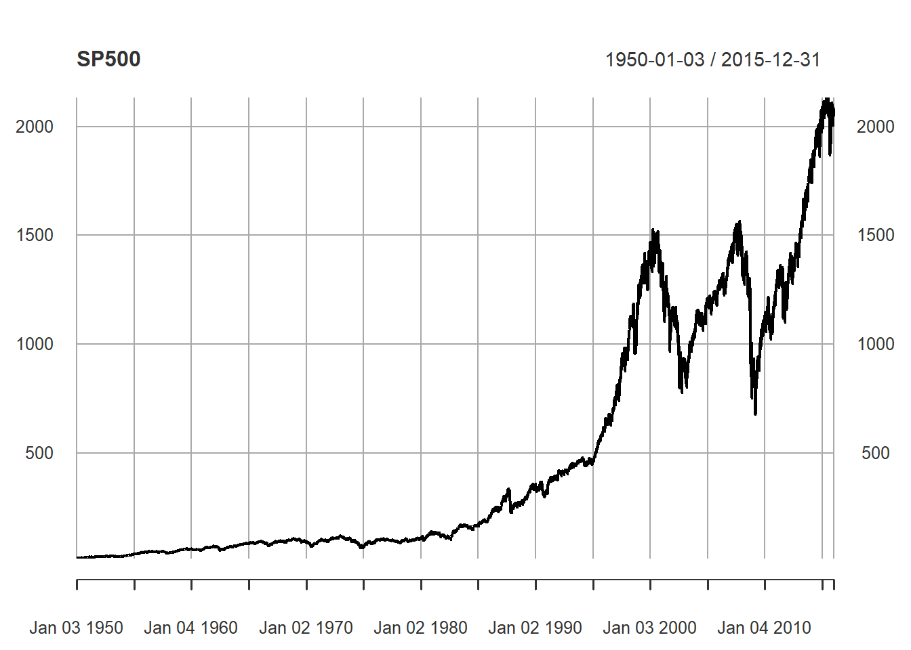
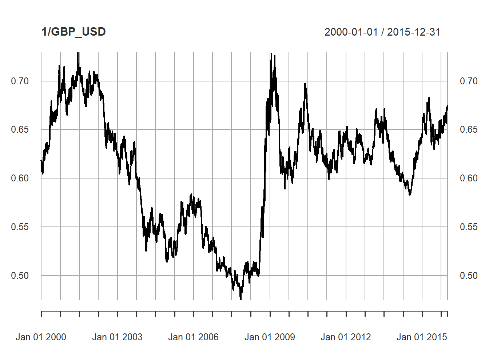

library(xts)
library(zoo)
library(qrmdata)
library(qrmtools)
library(tidyverse)
library(quantmod)
library(PerformanceAnalytics)Quantitative Risk Management in R
DataCamp
Setup
Exploring Market Risk-Factor Data
Video 1
Introduction:
Hello. My name is Alex McNeil, and I am going to take your through “An Introduction to Quantitative Risk Management”.
My background is in mathematical statistics, actuarial science, and quantitative finance. Together with my colleagues Ruediger Frey and Paul Embrechts, I am the author of the book “Quantitative Risk Management: Concepts, Techniques, and Tools”, published by Princeton University Press. If you want the theoretical background to this course, I recommend you take a look. Together with my co-authors and with Marius Hofert, I have also created the website qrmtutorial.org which provides complementary materials to the QRM book. In particular, there is a lot of R code there, which you might want to try after you’ve taken this course. Marius and I have two R packages which feature prominently in qrmtutorial. These are qrmdata, which is a large collection of financial datasets for students and researchers in QRM, and qrmtools, which is a set of useful functions. You’ll use these packages in the course.
In QRM, the goal is to quantify the risk of a portfolio of risky assets. Measuring the risk is the first step towards managing the risk. In the book I wrote, we consider the typical portfolios of risky assets held by banks and insurance companies, and sometimes also their liabilities. But the ideas apply equally to the portfolio of a private investor, like you or me. Managing the risk can entail many things. For example, you might try to reduce the risk by selling assets, by acquiring new assets to increase the diversification of the portfolio, or by using so-called hedging strategies. For the banks and insurers, an important part of managing risk is making sure they have sufficient capital to withstand large losses on their portfolios and remain solvent. For this purpose, they compute measurements of the amounts that they could lose in periods of extreme market stress. A well-known example of one of these risk measures is Value-at-Risk. In this course, you will work up to calculating Value-at-Risk for portfolios. To begin with, it is important to consider where the risk in a portfolio comes from.
So think of a portfolio of risky assets. It might contain some stock index trackers, some individual stocks, some government bonds or treasuries, some corporate bonds. It might contain assets denominated in domestic currency and some denominated in foreign currencies. It might contain commodities, like gold. It might contain some derivative securities designed to hedge risk or speculate on price movements, such as equity options. The value of this portfolio at any point in time depends on the fluctuating values of many underlying quantities, which we call risk factors. Examples of risk factors are equity indexes, individual equity prices, foreign exchange rates, interest rates for different borrowing periods (in the case of bonds), and commodity prices. Let’s load the qrmdata package and then the dataset SP500. This contains daily values of the well-known equity index based on 500 of the most important US stocks.
Using head and tail, the first few lines, and the last few lines of the data can be displayed. Note the dates of the first few values in 1950 and the last few values up to the end of 2015.
data("SP500")
head(SP500) ^GSPC
1950-01-03 16.66
1950-01-04 16.85
1950-01-05 16.93
1950-01-06 16.98
1950-01-09 17.08
1950-01-10 17.03tail(SP500) ^GSPC
2015-12-23 2064.29
2015-12-24 2060.99
2015-12-28 2056.50
2015-12-29 2078.36
2015-12-30 2063.36
2015-12-31 2043.94Let’s plot the index. You can see how it has generally gone up over time, but with some drawdowns such as around the 2008-2009 financial crisis.
plot(SP500)
Let’s practice
Exploring risk-factor time series: equity indexes
In this exercise, you will look at an equity index and plot it for a particular range of dates. The data used in this exercise and in the rest of the course are contained in the package qrmdata. You also need the package xts to manipulate time series.
When the qrmdata library is attached, as it will be throughout the course, you can load a dataset with the data() command. For example, the command data("FTSE") loads the UK FTSE (Financial Times Stock Exchange) index, which you can then refer to as object FTSE.
If you want to extract the data from a certain date range, for example from April 1 to June 30, 2000, you can create a new object using the command ftse00 <- FTSE["2000-04-01/2000-06-30"].
- Load the Dow Jones index “DJ” from
qrmdata. - Show the first and last few lines of the DJ index with
head()andtail(). - Plot the DJ index using
plot(). - Extract the DJ index for the crisis period 2008-2009 and assign to object
dj0809. - Plot the
dj0809using the same plotting function as above.
# Load DJ index
data("DJ")
# Show head() and tail() of DJ index
head(DJ) ^DJI
1985-01-29 1292.62
1985-01-30 1287.88
1985-01-31 1286.77
1985-02-01 1277.72
1985-02-04 1290.08
1985-02-05 1285.23tail(DJ) ^DJI
2015-12-23 17602.61
2015-12-24 17552.17
2015-12-28 17528.27
2015-12-29 17720.98
2015-12-30 17603.87
2015-12-31 17425.03# Plot DJ index
plot(DJ)
# Extract 2008-2009 and assign to dj0809
dj0809 <- DJ["2008-01-01/2009-12-31"]
# Plot dj0809
plot(dj0809)Exploring risk-factor time series: individual equities
For some risk management applications, it is sufficient to model equity risk by looking at indexes. If you want a more detailed model of the risk in a portfolio of equities, you can drill down to the level of individual share prices.
In the previous chapter, you used DJ["2008/2009"] to extract the Dow Jones data from certain rows of an xts object by specifying a date range index. To also extract data from particular columns, you can add a column identifier, like a string name or numeric index, in the brackets following a comma. To select multiple columns, include these column identifiers in a vector. This [rows, columns] format is consistent with indexing most other two dimensional objects in R.
data[index, colname] data[index, c(col1index, col2index)]
The qrmdata package also includes data for certain constituents, or the stocks or companies part of a larger index. The Dow Jones constituents data are contained in DJ_const. In this exercise, you will view the names of all its stocks, select the Apple and Goldman Sachs share prices, and plot them using the command plot.zoo() to display multiple time series.
- Load the DJ constituents data
DJ_constfromqrmdata. - Use
names()to view the names inDJ_constandhead()to display the first few rows. - Extract only the Apple (“AAPL”) and Goldman Sachs (“GS”) share prices for 2008-2009 and assign them to object
stocks. - Plot
stocksusingplot.zoo().
# Load DJ constituents data
data(DJ_const)
# Apply names() and head() to DJ_const
names(DJ_const) [1] "AAPL" "AXP" "BA" "CAT" "CSCO" "CVX" "DD" "DIS" "GE" "GS"
[11] "HD" "IBM" "INTC" "JNJ" "JPM" "KO" "MCD" "MMM" "MRK" "MSFT"
[21] "NKE" "PFE" "PG" "TRV" "UNH" "UTX" "V" "VZ" "WMT" "XOM" head(DJ_const) AAPL AXP BA CAT CSCO CVX DD DIS GE GS HD
1962-01-02 NA NA 0.212905 0.593184 NA NA 1.227958 0.061014 0.145967 NA NA
1962-01-03 NA NA 0.217163 0.598964 NA NA 1.229230 0.061832 0.144501 NA NA
1962-01-04 NA NA 0.215034 0.614372 NA NA 1.220331 0.061832 0.142794 NA NA
1962-01-05 NA NA 0.210773 0.620152 NA NA 1.187280 0.062039 0.139132 NA NA
1962-01-08 NA NA 0.211306 0.624001 NA NA 1.169484 0.061832 0.138889 NA NA
1962-01-09 NA NA 0.211839 0.629777 NA NA 1.173297 0.063060 0.139620 NA NA
IBM INTC JNJ JPM KO MCD MMM MRK MSFT NKE PFE PG TRV UNH
1962-01-02 2.346625 NA NA NA 0.031031 NA NA NA NA NA NA NA NA NA
1962-01-03 2.367136 NA NA NA 0.030339 NA NA NA NA NA NA NA NA NA
1962-01-04 2.343548 NA NA NA 0.030571 NA NA NA NA NA NA NA NA NA
1962-01-05 2.297395 NA NA NA 0.029879 NA NA NA NA NA NA NA NA NA
1962-01-08 2.254319 NA NA NA 0.029570 NA NA NA NA NA NA NA NA NA
1962-01-09 2.280983 NA NA NA 0.030110 NA NA NA NA NA NA NA NA NA
UTX V VZ WMT XOM
1962-01-02 NA NA NA NA NA
1962-01-03 NA NA NA NA NA
1962-01-04 NA NA NA NA NA
1962-01-05 NA NA NA NA NA
1962-01-08 NA NA NA NA NA
1962-01-09 NA NA NA NA NA# Extract AAPL and GS in 2008-09 and assign to stocks
djstocks <- DJ_const["2008/2009", c("AAPL", "GS")]
# Plot stocks with plot.zoo()
plot.zoo(djstocks)Exploring risk-factor data: exchange rates
For a portfolio with risk exposure in different countries, it is necessary to consider the risk coming from foreign exchange (FX) rates. The qrmdata package includes FX rate data for many currencies, ranging from Swiss Francs to Japanese Yen, with respect to the USD (United States dollar) and GBP (Great Britain pound).
In this exercise, you will look at the datasets EUR_USD and GBP_USD, which contain the Euro and British pound exchange rates against the US dollar. Then, you will merge these time series and plot them together for the period 2010-2015.
- Load the foreign exchange data
GBP_USDandEUR_USDfromqrmdata. - Use
plot()to plot each exchange rate separately. - Use
plot()and the inverse ofGBP_USDto plot a US dollar to British pound exchange rate. Usemerge()to merge theGBP_USDandEUR_USDdata, in that order, as objectfx. - Extract the exchange rates for 2010-15 from
fxand assign tofx0015. - Plot
fx0015usingplot.zoo().
# Load exchange rate data
data("GBP_USD")
data("EUR_USD")
# Plot the two exchange rates
plot(GBP_USD)
# Plot the two exchange rates
plot(EUR_USD)# Plot a USD_GBP exchange rate
plot(1 / GBP_USD)
# Merge the two exchange rates GBP_USD and EUR_USD
fx <- merge(GBP_USD, EUR_USD, all = TRUE)
# Extract 2010-15 data from fx and assign to fx0015
fx0015 <- fx["2010/2015"]
# Plot the exchange rates in fx0015
plot.zoo(fx0015)Video 2
Risk-factor returns:
In QRM, the aim is to model the fluctuations in key risk factors which affect the value of a portfolio.
These fluctuations are called the risk-factor changes or risk-factor returns or simply returns. However, there are a few different ways of defining returns. Let \(Z_t\) be a time series containing the values of a risk factor at a time at a set of regularly-spaced times, which could represent days, weeks, months, etc. For illustration, let’s suppose it is a daily series. Here are three different ways of defining risk-factor returns \(X_t\): In the first definition, the returns are the differences of the risk-factor values, known as simple returns. This is the simplest definition but not the most common. It tends to be used when the risk factors have very small values close to zero (like certain interest-rate series). The second definition is the easiest to interpret. The relative returns are the differences divided by the initial values. If you multiply the relative returns by one hundred, you get percentage changes. So if a stock has a relative return of point zero two, it gains 2% in value; if it has a relative return of minus point zero three, it falls 3% in value. In the third definition, the returns are the differences of the log-values of the risk factors; these are log-returns. This definition is, in fact, the most widely used. Here are a few of the reasons why log-returns are popular.
If you build a model for the log-returns of a risk factor, you know that the risk-factor can never become negative. This is generally a desirable feature for risk factors that are prices and rates. However, some risk factors can become negative under unusual market conditions, an example being short-term interest rates. Log returns are, in fact, very close to relative returns for typical values. It can be shown with some algebra that \(log(Z_t) - log(Z_{t-1})\) can be approximated by \(\frac{Z_t - Z_{t-1}}{Z_{t-1}})\) Finally, there are a couple of theoretical reasons for using log-returns: It is particularly easy to aggregate them to calculate longer-interval returns, such as weekly or monthly returns, as we will see later in this chapter. Also, there is a very famous model for prices known as the Black-Scholes-Merton model, or geometric Brownian motion (GBM). The model is widely used for pricing derivatives. If a price series follows GBM, then the log-returns will be normally distributed. That’s all you really need to know about this model at this stage.
It’s worth remarking, however, that you are going to find that log-returns generally aren’t normally distributed in practice, at least for short time horizons. To calculate the log-returns of the S&P 500 index, you apply the functions log and diff in succession. Diff calculates differences. Here is some code to illustrate. Note that you get an NA in the first position when you apply these operations. It is best to remove the first value prior to working with the return series.
Now let’s plot the log-returns. You see, a fairly noisy series mostly oscillating between minus point zero five and plus point zero five, which can be approximately interpreted as 5% movements up and down. However, there are some very extreme values. The largest negative return corresponds to the famous stock market crash on Black Monday in 1987.
Now it’s your turn to calculate and plot some returns in the next exercises.
Exploring return series
To analyze risk, the key task is to model the fluctuations in prices and rates over different time periods; these fluctuations are known as returns. To calculate the log-returns of the FTSE stock index and assign to ftse_x, apply the log() and diff() functions in succession:
ftse_x <- diff(log(FTSE))
As you saw in the video, differencing in this way will always give a NA in the first position of the time series, which can then be removed with diff(log(FTSE))[-1]. However, you will not need to do this in the course unless it is specified in the instructions.
In this exercise, you will calculate and plot log-return series for the equity and FX risk factors that you have previously encountered. The datasets dj0809, djstocks, and GBP_USD have been pre-loaded into your workspace.
- Compute the log-returns of the DJ index in
dj0809and assign to objectdj0809_x. - Plot the return series
dj0809_x. - Compute the log-returns of all share prices in
djstocksand assign todjstocks_x. - Plot the share returns
djstocks_x. Note thatdjstocks_xcontains multiple time series. - Compute the log-returns of the
GBP_USDexchange rate series and assign toerate_x. - Plot the return series
erate_x.
# Compute the log-returns of dj0809 and assign to dj0809_x
dj0809_x <- diff(log(dj0809))
# Plot the log-returns
plot(dj0809_x)# Compute the log-returns of djstocks and assign to djstocks_x
djstocks_x <- diff(log(djstocks))
# Plot the two share returns
plot.zoo(djstocks_x)# Compute the log-returns of GBP_USD and assign to erate_x
erate_x <- diff(log(GBP_USD))
# Plot the log-returns
plot(erate_x)Different ways of plotting risk-factor and return series
You already know that you can use plot.zoo() to plot multiple time series. For a four-dimensional time series data, the call plot.zoo(data) creates four separate plots by default, unless you include the parameter plot.type = "single" to plot all four series in one plot. You can also add even more parameters such as col to specify different colors and type = "h" to get vertical bars instead of joining points, which can sometimes be a better way of displaying returns.
plot.zoo(x, plot.type, col = 1, type = "l", ...)
In this exercise, you will explore the plot.zoo() function to plot equity risk-factor data and the corresponding returns in different ways. The multivariate time series djstocks and DJ_const are available in your workspace.
- Plot
djstocksin four separate plots. - Plot
djstocksin one plot in colors 1 to 4. The code to create an appropriate legend for the plot is provided. - Compute the log-returns of
djstocksand assign them todjstocks_x. - Plot
djstocks_xin four separate plots. - Plot
djstocks_xin four separate plots with vertical bars.
djstocks_new <- DJ_const["2008/2009", c("AAPL", "AXP", "BA", "CAT")]
# Plot djstocks in four separate plots
plot.zoo(djstocks_new)# Plot djstocks in one plot and add legend
plot.zoo(djstocks_new, plot.type = "single", col = 1:4)
legend(julian(x = as.Date("2009-01-01")), y = 70, legend = names(DJ_const)[1:4], fill = 1:4)# Compute log-returns and assign to djstocks_x
djstocksnew_x <- diff(log(djstocks_new))
# Plot djstocks_x in four separate plots
plot.zoo(djstocksnew_x)# Plot djstocks_x with vertical bars
plot.zoo(djstocksnew_x, type = "h")Video 3
Aggregating log-returns:
I remarked before that it is easy to aggregate shorter interval log-returns like daily returns to obtain longer-interval returns like weekly or monthly returns. Effectively you just add them up! Why would you want to do this? Well, by aggregating returns, you can study the risks over longer time horizons, such as a month, a quarter, or a year. There is some simple mathematics behind the aggregation of log-returns. Let’s assume that the series \(X_t\) are daily log-returns calculated from daily risk-factor values \(Z_t\). Let’s assume further that \(Z_t\) is a price series for some asset that is traded on weekdays. To get the log-return for a whole trading week starting on day t (effectively the previous Friday evening price before markets open on the Monday morning) and ending on day t+5 (Friday evening again), you would calculate the difference \(log(Z_{t+5}) - log(Z_t)\). It can be shown that this is just the sum of the log-returns for each of the trading days. And a similar calculation works for any aggregation period.
To do this in R, you can use a set of functions in the xts package with names like apply.weekly and apply.monthly. If the object sp500x is an xts object contains daily log-returns, you obtain weekly returns by applying the sum function within the apply.weekly function. Note how the returns now have date stamps that are seven days apart. Similarly, to get monthly returns, you apply the sum function within the apply.monthly function. Now the date stamps are the last days of each calendar month. Note that if you have a multivariate time series containing, for example, multiple stock prices, you have to apply the function colSums() instead of sum(). Look out for an example of that at the end of the next exercise.
So now it is time to practice aggregating log-return series.
Aggregating log-return series
In statistics, aggregate data are data combined from several measurements. You just learned that you can compute compute weekly, monthly and quarterly log-returns by summing daily log-returns with the corresponding apply.weekly(), apply.monthly() and apply.quarterly() functions.
For example, you can use the following code to form the quarterly returns for a univariate time series data and multivariate time series mv_data:
apply.quarterly(x, FUN, ...) data_q = apply.quarterly(data, sum) mv_data_q = apply.quarterly(mv_data, colSums)
In this exercise, you will practice aggregating time series data using these functions and plotting the results. The data DJ and DJ_const are available in your workspace, as are the objects djx, which contains daily log-returns of the Dow Jones index from 2000-2015, and djreturns, which contains the daily log-returns for the first four DJ_const stocks from 2000-2015. Use plot for univariate time series and plot.zoo for multivariate time series.
- Plot the object
djx. - In one line, plot the weekly log-returns of
djxwith vertical bars. - Plot the monthly log-returns of
djxwith vertical bars. - Plot the object
djreturnsusingplot.zoo. - Plot the monthly log-returns for
djreturnswith vertical bars usingplot.zoo.
djx <- diff(log(DJ["2000/2015"]))
# Plot djx
plot(djx)# Plot weekly log-returns of djx
plot(apply.weekly(djx, sum), type = "h")# Plot monthly log-returns of djx
plot(apply.monthly(djx, sum), type = "h")djreturns <- diff(log(DJ_const["2000/2015", 1:4]))
# Plot djreturns
plot.zoo(djreturns)# Plot monthly log-returns of djreturns
plot.zoo(apply.monthly(djreturns, colSums), type = "h")A test on aggregation of log-returns
Data scientists often use the aggregations that you have learned so far in combination with summary statistics to extract even more insights from data. Functions that calculate summary statistics include mean(), median(), and var().
The object sp contains daily log-returns for the S&P 500 index for the period 1960-2015; it is loaded in your workspace. To three decimal places, what is the average quarterly log-return for the S&P 500 from 1990-2010?
sp <- diff(log(SP500["1990/2010"]))[-1]
head(sp) ^GSPC
1990-01-03 -0.002588886
1990-01-04 -0.008650298
1990-01-05 -0.009804141
1990-01-08 0.004504312
1990-01-09 -0.011856706
1990-01-10 -0.006629089round(mean(apply.quarterly(sp, sum)), 3)[1] 0.015